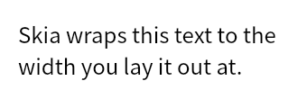
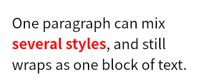
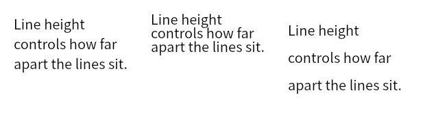
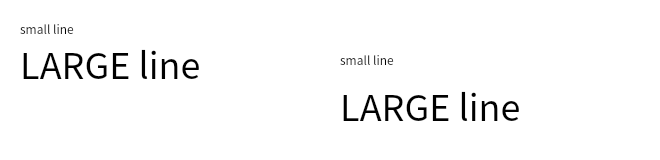
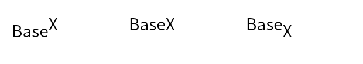

Paragraph Overview
Canvas.drawTextBlob() draws a single run of text on one line. When text has
to wrap to a width, or mix styles within a block, use the textlayout module, which
shapes, breaks and positions the lines for you.
Laying out a paragraph
Four objects are involved. A FontCollection
resolves font families, a TextStyle describes how a
run of characters looks, a ParagraphStyle
carries settings for the block as a whole, and a
ParagraphBuilder collects text and produces
the paragraph:
import skia
font_collection = skia.textlayout.FontCollection()
font_collection.setDefaultFontManager(skia.FontMgr())
text_style = skia.textlayout.TextStyle()
text_style.setFontSize(24.0)
text_style.setColor(skia.ColorBLACK)
paragraph_style = skia.textlayout.ParagraphStyle()
paragraph_style.setTextStyle(text_style)
builder = skia.textlayout.ParagraphBuilder.make(
paragraph_style, font_collection, skia.Unicodes.ICU.Make())
builder.addText("Skia wraps this text to the width you lay it out at.")
paragraph = builder.Build()
paragraph.layout(300.0)
surface = skia.Surface(340, 120)
with surface as canvas:
canvas.clear(skia.ColorWHITE)
paragraph.paint(canvas, 20.0, 20.0)
surface.makeImageSnapshot().save('output.png', skia.kPNG)

The paragraph does nothing until layout() is called, which is what breaks the text
into lines. Call it before painting the paragraph or reading any of its metrics, and
again whenever the width changes.
Mixing styles
The builder keeps a stack of text styles. Text added after pushStyle() uses the
style on top of the stack, and pop() returns to the one beneath it, so a single
paragraph can mix styles and still wrap as one block:
plain = skia.textlayout.TextStyle()
plain.setFontSize(24.0)
plain.setColor(skia.ColorBLACK)
accent = skia.textlayout.TextStyle()
accent.setFontSize(24.0)
accent.setColor(skia.ColorRED)
accent.setFontStyle(skia.FontStyle.Bold())
builder = skia.textlayout.ParagraphBuilder.make(
skia.textlayout.ParagraphStyle(), font_collection, skia.Unicodes.ICU.Make())
builder.pushStyle(plain)
builder.addText("One paragraph can mix ")
builder.pop()
builder.pushStyle(accent)
builder.addText("several styles")
builder.pop()
builder.pushStyle(plain)
builder.addText(", and still wraps as one block of text.")
paragraph = builder.Build()
paragraph.layout(300.0)

Line height
By default each line is as tall as the font says it should be. To set the line height
yourself, pass a multiple of the font size to TextStyle.setHeight() and enable it
with TextStyle.setHeightOverride():
def laid_out(height_override, height):
style = skia.textlayout.TextStyle()
style.setFontSize(20.0)
style.setColor(skia.ColorBLACK)
style.setHeightOverride(height_override)
style.setHeight(height)
paragraph_style = skia.textlayout.ParagraphStyle()
paragraph_style.setTextStyle(style)
builder = skia.textlayout.ParagraphBuilder.make(
paragraph_style, font_collection, skia.Unicodes.ICU.Make())
builder.addText("Line height controls how far apart the lines sit.")
paragraph = builder.Build()
paragraph.layout(180.0)
return paragraph
natural = laid_out(False, 2.0) # setHeight ignored (the override is off)
tight = laid_out(True, 1.0) # exactly one font size per line
loose = laid_out(True, 2.0) # two font sizes per line
surface = skia.Surface(620, 190)
with surface as canvas:
canvas.clear(skia.ColorWHITE)
natural.paint(canvas, 20.0, 20.0)
tight.paint(canvas, 220.0, 20.0)
loose.paint(canvas, 420.0, 20.0)

Left to right, the font’s own line height, then TextStyle.setHeight(1.0) and
TextStyle.setHeight(2.0). With the override on, the pitch is exactly the multiple of
the font size (20 and 40 pixels a line here) rather than whatever the font asks for,
which for this font is 29.
Note the first of the three. TextStyle.setHeight() on its own does nothing. Without
TextStyle.setHeightOverride(True) the value is stored and ignored, and the paragraph
comes out at the font’s natural height.
Where the extra space goes is a second choice. By default Skia scales the font’s ascent
and descent by the multiple. TextStyle.setHalfLeading(True) splits the difference
evenly above and below the text instead, which leaves the line box the same height and
moves only the text inside it. At a multiple of 1.0 with a 20 pixel font:
TextStyle.setHalfLeading(False) Height 20.0 baseline 16.02
TextStyle.setHalfLeading(True) Height 20.0 baseline 18.72
The two coincide when the requested height matches the font’s own line height, since then there is no extra space to place. The numbers above come from a font whose natural line height is 29 pixels at this size. A font that is exactly one em tall, as Helvetica is, gives the same baseline either way.
Skia caches shaped runs on the FontCollection,
and the cache is not keyed on half leading, so laying the same text out twice through one
collection gives the first result both times and the setting looks inert. Give each
paragraph its own collection when comparing the two.
The strut
The line height from TextStyle.setHeight() is relative. Each run is measured against
its own font size, so a paragraph mixing 12 and 36 point text still comes out with lines
of different heights. The strut is the absolute version of the same idea. It gives every
line a minimum height taken from a font of its own, so the lines keep a common rhythm
whatever they contain.
The name is borrowed from typesetting, where a strut is an invisible box of zero width with a fixed height and depth that is dropped into a line to hold it open. Skia’s strut behaves the same way, as though a zero width character in a font of its own sat at the start of every line:
def graf(strut_height):
paragraph_style = skia.textlayout.ParagraphStyle()
if strut_height is not None:
strut = skia.textlayout.StrutStyle()
strut.setStrutEnabled(True)
strut.setHeightOverride(True)
strut.setHeight(strut_height)
paragraph_style.setStrutStyle(strut)
small = skia.textlayout.TextStyle()
small.setFontSize(12.0)
large = skia.textlayout.TextStyle()
large.setFontSize(36.0)
builder = skia.textlayout.ParagraphBuilder.make(
paragraph_style, font_collection, skia.Unicodes.ICU.Make())
builder.pushStyle(small)
builder.addText("small line\n")
builder.pop()
builder.pushStyle(large)
builder.addText("LARGE line")
paragraph = builder.Build()
paragraph.layout(400.0)
return paragraph
surface = skia.Surface(660, 160)
with surface as canvas:
canvas.clear(skia.ColorWHITE)
graf(None).paint(canvas, 20.0, 20.0)
graf(4.0).paint(canvas, 340.0, 20.0)
>>> graf(None).Height
69.0
>>> graf(4.0).Height
112.0

Left, the two lines are 17 and 52 pixels tall. Right, under a strut of 4.0 they are 56
each. Every line comes out at the taller of its own height and the strut’s, so the strut
is a floor rather than a setting, and StrutStyle.setForceStrutHeight() is what makes
it an exact height instead.
The multiple given to StrutStyle.setHeight() applies to the strut’s own font size
rather than to the text’s. That size is 14 unless StrutStyle.setFontSize() changes
it, which is how 4.0 becomes the 56 pixels above.
One thing to know before turning the strut on. The minimum applies at once, so text smaller than the strut grows to meet it:
text size strut off strut on
6 pt 9.00 20.00
8 pt 12.00 20.00
12 pt 17.00 20.00
20 pt 29.00 29.00
Six point text ends up more than twice as tall as it asked for. Since the strut has to
be enabled to reach StrutStyle.setLeading() at all, this catches people who wanted
the leading and not the floor. Setting StrutStyle.setHeight() low, with
StrutStyle.setHeightOverride(True), puts the floor back under the text and out of
the way.
Shifting text off the baseline
TextStyle.setBaselineShift() moves one run off the baseline the rest of the line
sits on, which is how superscripts and subscripts are made. Positive values move the
text down, so a superscript takes a negative shift. The line box grows to keep the
shifted text inside it, whichever way it goes:
def shifted(shift):
def style(value):
s = skia.textlayout.TextStyle()
s.setFontSize(28.0)
s.setColor(skia.ColorBLACK)
s.setBaselineShift(value)
return s
builder = skia.textlayout.ParagraphBuilder.make(
skia.textlayout.ParagraphStyle(), font_collection, skia.Unicodes.ICU.Make())
builder.pushStyle(style(0.0))
builder.addText("Base")
builder.pop()
builder.pushStyle(style(shift))
builder.addText("X")
paragraph = builder.Build()
paragraph.layout(300.0)
return paragraph
surface = skia.Surface(620, 110)
with surface as canvas:
canvas.clear(skia.ColorWHITE)
for index, shift in enumerate((-12.0, 0.0, 12.0)):
shifted(shift).paint(canvas, 20.0 + index * 200.0, 20.0)

Left to right, a shift of -12, 0 and +12 on the final character. The block grows by the same amount either way:
shift -12.0 Height 53.0
shift 0.0 Height 41.0
shift +12.0 Height 53.0
Measuring the result
After layout(), the paragraph reports what it produced. Laying out the line height
example again at a multiple of 1.5:
>>> paragraph = laid_out(True, 1.5)
>>> paragraph.Width
180.0
>>> paragraph.LongestLine
166.09979248046875
>>> paragraph.MinIntrinsicWidth
76.30000305175781
>>> paragraph.MaxIntrinsicWidth
429.44000244140625
>>> paragraph.Height
90.0
>>> paragraph.ExceedMaxLines
False
Width is the width you passed to layout(), not the width of the text, and
LongestLine is how wide the text actually came out. The two intrinsic widths are the
bounds the text could take, the narrowest width that never has to break a word and the
width the whole text would need on one line.
Treat those as bounds rather than as widths to lay out at. The comparison in layout()
is strict, so laying out at exactly MaxIntrinsicWidth still wraps, and a single line
needs a fraction more than that. The same paragraph can be laid out again at any width
and the metrics follow, which is enough to fit text to a box by width. Fitting by font
size needs a new paragraph each time, because the text style is fixed once Build()
is called.